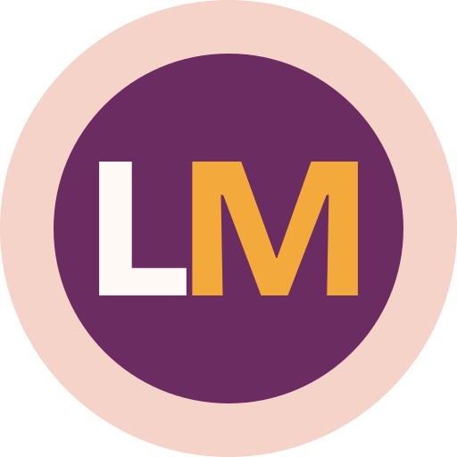

Paraaf · AI-native ontwikkelstraat
Bijna elk ontwikkelteam gebruikt AI. Bijna niemand heeft vastgelegd hoe, door wie en onder welk toezicht. Met Paraaf richt Bureau Gerritsma een ontwikkelstraat in waarin mensen beslissen, AI-agents het werk uitvoeren en een mens elke stap checkt. Zo is elke wijziging terug te voeren op een besluit.
84% van de Nederlandse organisaties gebruikt AI bij softwareontwikkeling. Elke balk loopt tot die 84%. Het gevulde deel is hoe ver organisaties zijn; het gearceerde deel is het gat.
Bron: Info Support, onderzoek onder 330 Nederlandse IT-beslissers (via Techzine, augustus 2026).
Geen sprints van twee weken, maar een doorlopende stroom met vaste momenten waarop mensen beslissen.
De product owner werkt samen met AI een idee uit tot specificaties met acceptatiecriteria.
De product owner keurt het wat, de CTO het hoe. De spec is het contract.
AI-agents bouwen per issue code en tests, aangestuurd door een engineer.
Tests, security-scan, een review-agent en menselijke review naar risico.
Op werkende software. Elke fout wordt een nieuwe regel in Paraaf.
Mensen tekenen, agents voeren uit.
De vraag bij elke wijziging: wat gebeurt er als dit misgaat? Daarop bepaalt u hoeveel menselijke aandacht een wijziging krijgt.
Gaat het mis, dan ziet iets er even raar uit.
Bijvoorbeeld een tekst op een pagina of een extra veld in een intern formulier. Automatische controles en de review-agent, de product owner keurt goed.
1 mens tekent
Gaat het mis, dan werkt een proces verkeerd.
Bijvoorbeeld een berekening, een koppeling of een databasewijziging. Daarbovenop leest de CTO zelf de code en de tests.
2 mensen tekenen
Gaat het mis, dan komen veiligheid, geld of privacy in gevaar.
Bijvoorbeeld inloggen en rechten, betalingen of persoonsgegevens. Daarbovenop een tweede deskundige en vooraf een plan om terug te draaien.
3 mensen tekenen
AI stelt de klasse voor, de CTO bevestigt. Bij twijfel altijd een klasse hoger.
Voor elke stap is vastgelegd wie tekent en waar het staat. Zo is achteraf altijd te zien wie besloot, wat de AI deed en wie het goedkeurde.
Gebouwd met Paraaf

Een matchplatform voor werk dat werkt via de persoonlijke AI-assistent van professionals, zoals ChatGPT, Claude of Le Chat. Geen cv invullen: de assistent maakt het profiel, de professional geeft akkoord. Werkgevers zien wat iemand kan, niet wie het is, tot de professional zelf contact deelt.
Volledig gebouwd volgens Paraaf: ruim 100 issues in Jira, elk met een spec en een risicoklasse. Niets ging live zonder akkoord.
Bekijk legendmatch.nlVoor organisaties die zelf software ontwikkelen of laten ontwikkelen, en voor het mkb dat voor de keuze staat: een eigen AI-straat inrichten of een ontwikkelpartij inhuren.
In één gesprek brengen we in kaart hoe AI nu wordt gebruikt en waar het gat zit.
Plan een gesprek